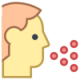
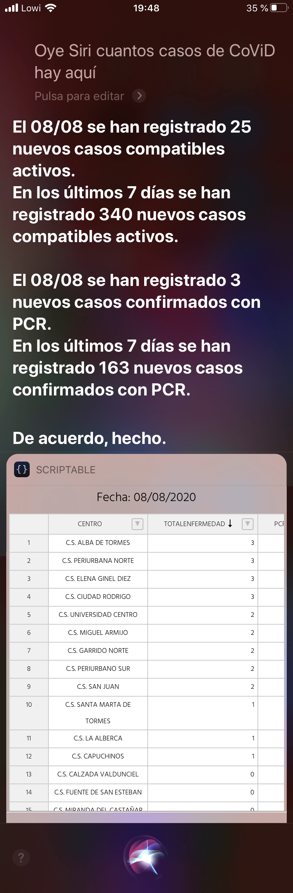

Introduce el municipio cuya zona básica de salud desea consultar
No hay datos para los parámetros indicados, o se están cargando...
Este municipio pertenece a la zona de salud de , y estos son sus datos más recientes ():

nuevos casos
con síntomas compatibles en los últimos 7 días en los últimos 14 días
casos
confirmados con PCR en los últimos 7 días en los últimos 14 días
casos
activos en los últimos 7 días en los últimos 14 días
Tasa PCRs positivas en los últimos 7 días/10.000 tarjetas sanitarias: . La primera vez que se alcanzó en esta zona un número parecido de casos activos (X, dd/mm/yyyy), tardó en bajar al siguiente mínimo Y días (Z, dd/mm/yyyy).Nunca se han registrado tantos casos activos en esta zona. Por favor, sé responsable.
Dejar en blanco la fecha para cargar datos del último día disponible
No hay datos para los parámetros indicados, o se están cargando...
El gráfico se cargará aquí
IMPORTANTE: TOTAL ENFERMEDAD incluye casos con síntomas compatibles, PCR POSITIVOS incluye casos que han dado positivo en una prueba PCR.
Datos diarios en cada zona básica de salud. Actualización diaria.
Incidencia diaria de pacientes enfermos y de porcentaje de personas enfermas por número de tarjetas sanitarias en cada zona básica de salud. También se indican los enfermos y los porcentajes para los últimos 7 y 14 días.
El cálculo de la incidencia de la enfermedad se ha efectuado teniendo en cuenta el número de afectados en relación con el número de tarjetas por zona básica de salud. No se contabilizan aquellas personas que han dejado de tener síntomas compatibles con COVID19. Los datos se recogen desde el 29 de febrero de 2020.
El dato de pacientes enfermos incluye todos los diagnósticos compatibles con coronavirus (neumonía por COVID-19 y enfermedad por COVID-19). El registro de Medora (historia clínica de atención primaria) incluyó hasta el 14 de marzo únicamente pacientes diagnosticados por prueba de PCR (prueba de detección molecular). Desde el 14 de marzo y tras la modificación de la definición de enfermedad por el Ministerio de Sanidad, se incluyen pacientes con sospecha clínica de enfermedad.
Asimismo se informa de las PCR realizadas y sus porcentajes, así como los datos de PCR positivas y la tasa por 10000 tarjetas sanitarias, tanto de cada día como de los últimos 7 y 14 días.
Los datos son únicos para cada día salvo que se indique lo contrario (acumulados de 7 y 14 días).
Atajo de Siri
Es posible preguntarle a Siri* algo como “¿Cuántos casos de CoViD hay aquí?” (o la frase deseada en su lugar), y que responda con el total de casos activos con síntomas compatibles estimados actualmente y en los últimos 7 días (sumatorios de los valores de las columnas totalenfermedad y totalenfermedad_7dias, respectivamente):

Para ello, sólo hace falta tener instalada la app para iOS Atajos, Habilitar los atajos compartidos y descargar el atajo pulsando en el siguiente enlace desde el dispositivo iOS:
Una vez instalado, será necesario que cambies el nombre de la gerencia de la que deseas obtener los últimos datos. Recuerda que el valor que elijas sólo puede ser uno de los siguientes, respetando mayúsculas y minúsculas:
avila
burgos
leon
palencia
ponferrada
salamanca
segovia
soria
valladolidEste
valladolidOeste
zamora
Cambia, por tanto, el valor predeterminado de salamanca a tu gerencia deseada de la lista anterior. Una vez pulses en Listo podrás ejecutar tu atajo. Puedes hacerlo manualmente desde la propia app Atajos, o diciéndole a Siri Oye Siri, ¿Cuántos casos de CoViD hay aquí?.
Viendo la tabla desde el atajo
El atajo incluye por defecto la posibilidad de ver una tabla reducida. Para ello, sólo tienes que instalar la app Scriptable, y crear un nuevo Script (botón +) con el siguiente texto:
WebView.loadURL("https://bmsalamanca.com/es/CoViDCyL?gerencia=salamanca&hideTitle=true", new Size(0,500), true);
De nuevo, puedes cambiar la palabra salamanca por la gerencia que te interese. Por último, guarda el script con el mismo nombre que uses en el Atajo, por defecto es Load CoViD data.
Si no quieres descargar Scriptable (o alguna app de terceros similar) Siri no podrá cargar una web en miniatura al ejecutar el atajo, pero sí puedes hacer que la abra en Safari sin ninguna app externa. Para ello sólo tienes que sustituir el último bloque del atajo de Siri por el bloque llamado Mostrar sitio web, e introducir la siguiente url: https://bmsalamanca.com/es/CoViDCyL?gerencia=salamanca&hideTitle=true, sustituyendo salamanca por tu gerencia deseada.
¡Ya está! Ya tienes un atajo con el que estar informado sobre la incidencia actual de la CoViD-19 en tu cercanía.
*Para ejecutar Atajos de Siri, se necesita iOS 12 o posterior en el iPhone, el iPod touch o el HomePod, un Apple Watch Series 3 o posterior y iOS 12 o iPadOS o posterior en el iPad.